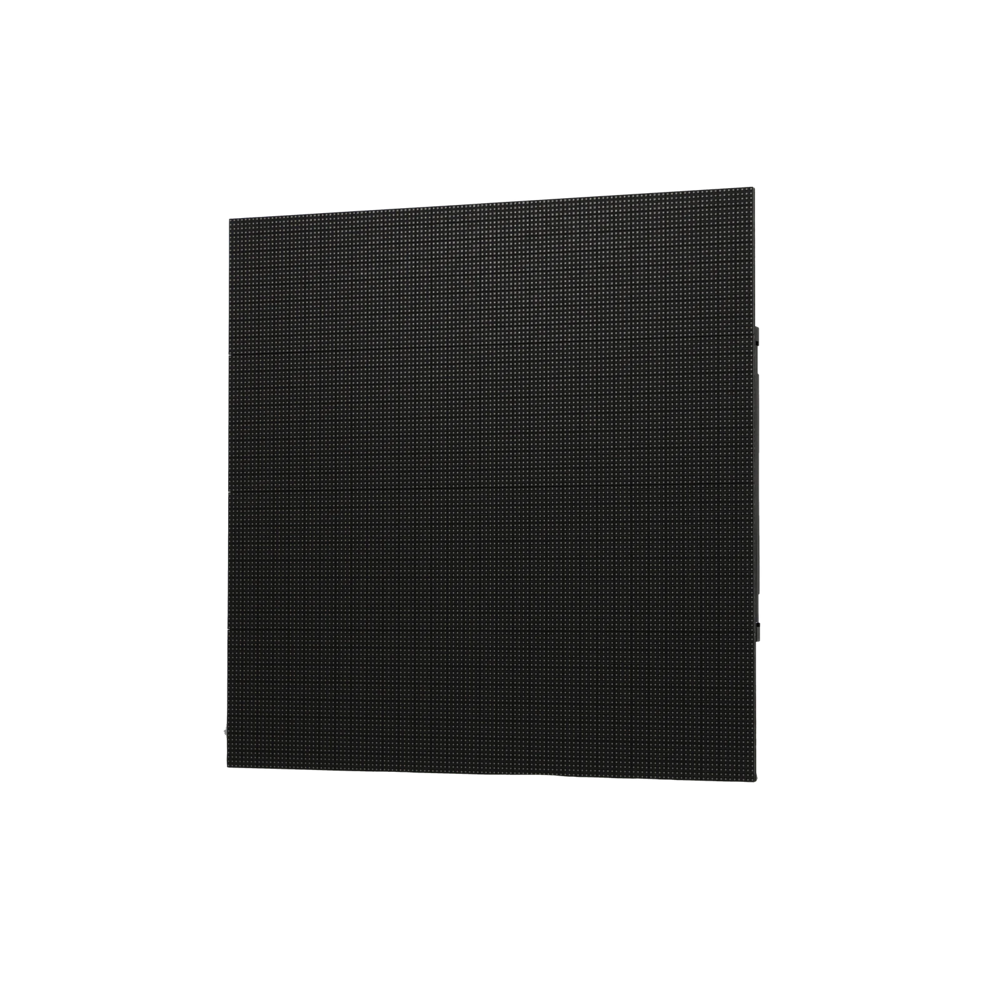
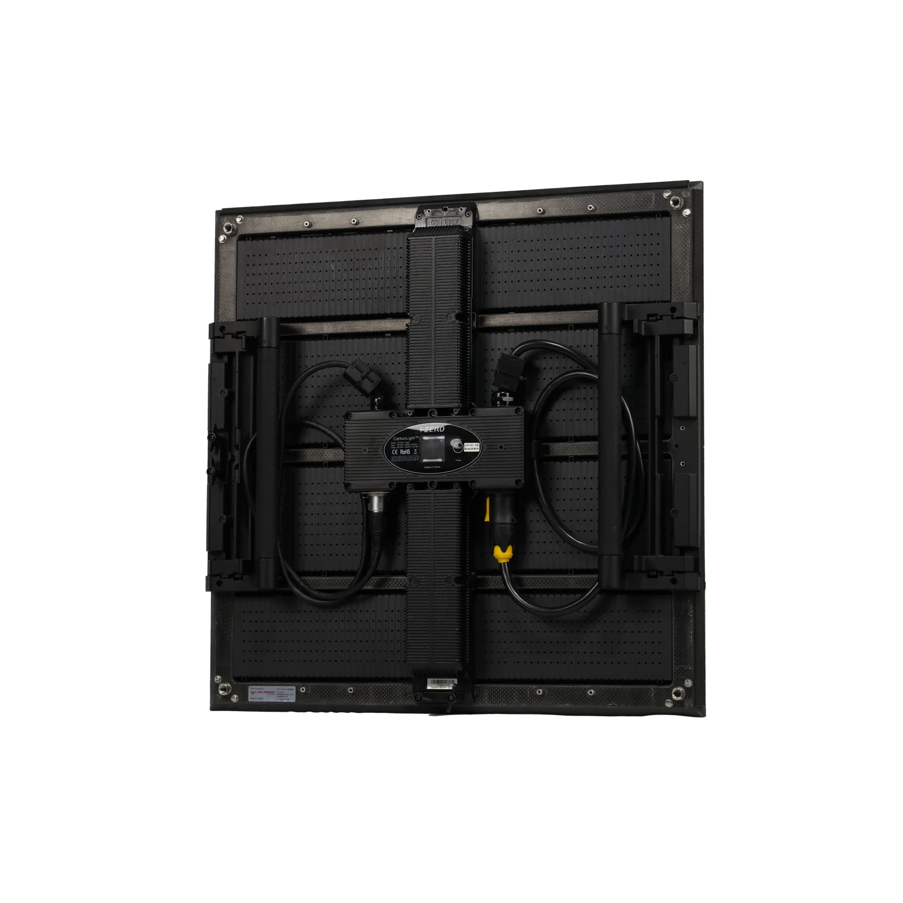
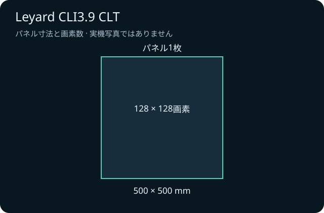

どこまで読む？
客席の距離に合わせ、細かな文字は本番素材で読みやすさを試す。
LED ↗EQUIPMENT / 67
屋内LEDパネル
文字も映像も、会場に合わせた画面へ。
KEY SPECIFICATIONS

画像を大きく見る ＋CLI3.9 CLTの表示面。正方形の黒いLEDパネルです。


01 / ROLE & FLOW
02 / BEFORE YOUR BRIEF
客席の距離に合わせ、細かな文字は本番素材で読みやすさを試す。
500mm角の組合せと素材の比率を合わせる。
画面の設置、電源、映像操作、撤去までの担当をそろえる。
03 / CHOOSING THE RIGHT TOOL
展示会の案内や発表会の背景に。正方形のパネルを組み合わせ、会場と素材に合った幅・高さを作ります。
屋内用です。CLI3.9-Fなど末尾が違う機種とは、設定と部材を分けて用意します。
前面から保守できる構造と背面の状態表示を備えています。映像が出ないときは、まず問題の位置と表示状態を担当技術者へ伝えます。モジュールの取外しや電源部の交換は、作業を任された技術者が行います。
重さ・消費電力はメーカーの公表値です（1枚あたりの表記）。吊り荷重と回路容量は、使う枚数と型式の公表値から計算して、設営前の図面に載せます。
日程、屋内外、画面の幅と高さ、枚数、使用する仕様、制御・支持部材、搬入出、設営・本番操作の担当範囲をお聞かせください。本体・周辺機材・搬入出・設営・本番操作・撤去を分けて、必要な範囲を整理します。
04 / RELATED EQUIPMENT